Cours de pixel art 9 : un monde de tiles
Tout ça pour ça…

Si vous m'avez lu jusqu'ici, vos connaissances théoriques en Pixel art sont désormais à peu près correctes. Cependant, vous êtes sans doute déçu que je n'ai pas répondu à vos préoccupations les plus pressantes, du genre « Comment je fais un tile d'herbe ? », « Comment je fais la tête de mon héros ? », « Comment faire un arbre pas trop moche ? », « Où trouver une nouvelle copine ? ». En fait, vous en savez déjà assez pour faire tout ça (sauf pour la copine, et là vous vous débrouillez mieux sans moi je pense)… mais ne rêvez pas trop ! Sans pratique, on n'arrive à rien, et si vous vous posez encore ce genre de question, vous avez besoin de pratique (et de critiques). Histoire de remédier un peu à cela, nous allons passer en revue les éléments de base qui constituent un tileset de RPG et qui posent beaucoup de problèmes en pixel art. Ou pas.
La hantise du Pixel artiste : le TILE D'HERBE (cris et pleurs)
Comme les pros !
Le problème qui se pose pour représenter de l'herbe est le même que celui pour la fourrure au chapitre précédent : les brins d'herbe sont trop fins pour être représentés individuellement en Pixel art. Il va donc falloir recourir à une stratégie semblable à celle des touffes de poils… j'ai nommé la stratégie des touffes d'herbe. Si.
Étant donné que des photos d'herbe ne vous seraient d'aucun secours dans votre tâche, il va falloir s'inspirer d'autre chose… à savoir des tiles d'herbe réussis (ou pas) de jeux professionnels. Ce qui va suivre n'est en aucun cas une incitation à la copie, il s'agit d'une collection de screenshots contenant des tiles d'herbes que je vous suggère d'observer de très près (enregistrez les et zoomez très fort) en vous posant des questions techniques : combien de couleurs sont utilisées ? quels motifs dessinent les couleurs ? dans quels sens sont orientées les « touffes » ? le résultat est-il convaincant ? Voilà sans plus attendre la collection en question. Enjouaillez.
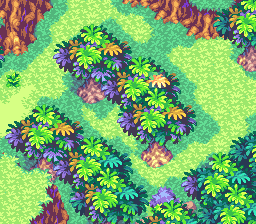
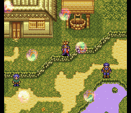
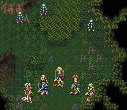

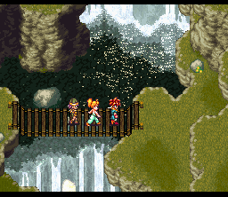
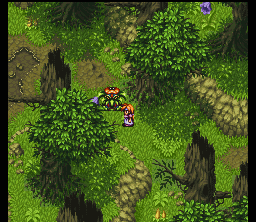
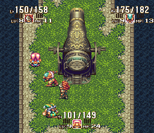
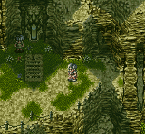
Cliquez sur les images si vous voulez voir les noms des jeux.
Comme je suis sympa, je vais vous mâcher un peu le travail et disséquer en votre compagnie le tile d'herbe de Rudora No Hihou. Voilà le tile d'herbe en question.
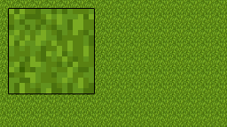
Il est impératif de remarquer que le tile n'est pas fait « n'importe comment » en plaçant au hasard des pixel des 4 couleurs. Souvenez vous du cours sur la texture. Les blocs d'une même couleur sont pour la plupart verticaux ou un peu en biais et cela représente grosso-modo la direction des touffes d'herbe. De plus, il n'y a pratiquement pas d'anti-aliasing (seulement un peu sous les highlights) car il n'y a pas franchement la place ou le besoin d'en faire (les teintes se ressemblent assez pour ne pas s'entrechoquer violemment).
Regardons justement un peu la palette histoire de savoir de quoi on parle : l'artiste a utilisé 4 teintes de vert pour créer ce tile d'herbe, à savoir une pour les highlights, une pour les ombres, et deux teintes médianes assez proches l'une de l'autre comme base. Les highlights servent à faire « le haut des touffes d'herbe » tandis que les ombres représentent les zones les plus enfoncées et près du sol.
La gestion du contraste est primordiale pour faire un tile d'herbe : moins le tile est contrastée, plus le tile est plat ; plus le tile est contrasté, plus le tile exhibe son volume et la richesse de la flore locale (couche épaisse d'herbe). Il faut réaliser un compromis entre un sol « plat » et sol « en volume » car ce dernier complique la lisibilité de l'écran et attire l'attention. Il ne faut pas oublier que le tile d'herbe ne doit pas noyer les personnages qui sont dessus ou paraitre plus éclairé et volumineux que les arbres et les maisons.
Pour l'exemple, comparez le screenshot original de Rudora No Hihou (à gauche) avec une version modifiée (teinte sombre de l'herbe plus sombre et teinte claire plus claire). A droite, il y a plus de volume mais moins de lisibilité.
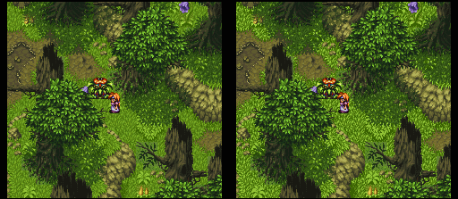
Trucs et astuces
Voici deux astuces qui devraient vous aider à mieux réussir votre tile d'herbe (la seconde ne s'applique d'ailleurs pas qu'aux tiles d'herbe).
Premièrement, il est très avantageux de ne pas utiliser un tile d'herbe… mais plusieurs tiles d'herbe ! Si vous avez observé attentivement les screenshots proposés ci dessus vous avez sans doute remarqué que chaque jeu utilise plusieurs tiles différents afin d'avoir des variations dans la texture du sol. Cela permet de limiter l'effet de quadrillage du à la répétition d'un même motif sur une large surface.
La plupart des jeux utilisent 4 tiles d'herbe (un carré 32*32), une variété d'herbes hautes et différents tiles de fleurs. De plus, les développeurs essayent en général de ne pas avoir de grandes étendues d'herbes (même pleines de variation) et remplissent leurs cartes de falaises et d'arbres pour se débarrasser une bonne fois pour toute du problème.
Deuxièmement, il est possible d'éliminer la grille de façon efficace en corrigeant à la main les petits détails de votre tiles qui rendent visible la répétition. Considérons si vous le voulez bien le tile (32* 32 pixels, 4 tiles donc)à votre gauche (réalisé exprès pour ce cours). Il n'est pas trop mal, mais j'ai encadré en rouge une ligne horizontale qui se répète de façon clairement visible tous les 32 pixels, et une ligne de touffes en diagonale qui souffre du même problème. En modifiant cela, je peux rendre mon tile plus uniforme et plus à même de boucler.
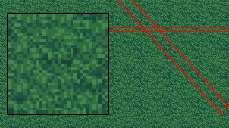
Le problème des touffes en diagonale se trouve dans la partie en haut à droite du tile donc il me suffit d'aplanir un peu les touffes pour corriger le problème. Par contre, les lignes horizontales sont à cheval sur le haut et le bas de mon tile (qui boucle mal donc) et il faut recourir à une petite astuce pour y remédier. L'astuce consiste à placer une copie du tile sous lui, histoire de bien voir la transition, et de faire disparaitre la ligne en travaillant à la fois sur le haut du tile du bas et le bas du tile du haut. Une fois la ligne supprimée, on colle ensemble le bas du tile du haut avec le haut du tile du bas…et on a un tile qui boucle correctement. Le procédé est illustré ci-dessous, Le résultat n'est pas encore parfait mais déjà bien plus convaincant.
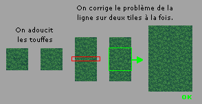
Auprès de mon arbreuuuh
Bien, maintenant que vous avez de la verdure, il est temps de passer au gros œuvre : un arbreuh (ou un arbre, pour les non initiés). Je ne vais pas vous faire l'affront de vous expliquer qu'un arbre est constitué de branches et de feuilles, et que ces dernières sont généralement vertes. Je commence par vous laisser regarder une pelletée de screenshots avec des arbres réussis (ou pas ! Chrono Trigger n'est pas un exemple à suivre dans le domaine) à observer, les explications sont en dessous. Comme précédemment, il serait très bon pour vous de passer du temps à analyser à la loupe quelques uns de ces screenshots et de procéder à des « dissections ».
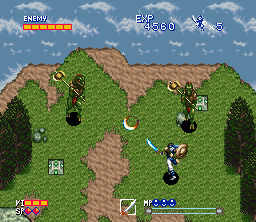
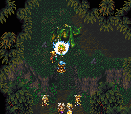
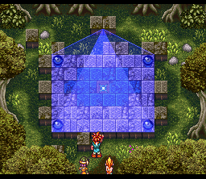
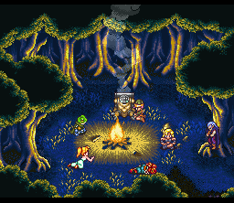
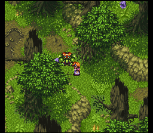
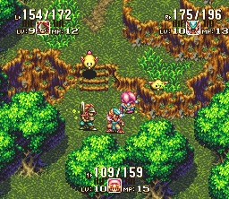

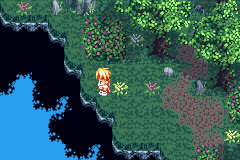
Comme vous pouvez le voir, il existe de nombreuses façon de représenter des arbres, du très réaliste Tales of Phantasia au plus exotique et stylisé Sword of Mana. En fait, je n'ai en tout et pour tout que quelques importants conseils à vous donner pour réussir un arbre : La premier c'est que les racines d'un arbre sont enfoncées dans le sol et qu'on a souvent tendance à l'oublier et à en faire d'interminables filaments qui courent entre les brindilles. Les arbres sont PLANTES dans le sol, une petite ballade en plein air sera l'occasion de le vérifier. Tant que vous êtes dehors, profitez-en pour jeter un œil aux feuillages autour de vous, c'est ce qu'il y a de plus important sur un arbre. Il y a deux erreurs à éviter sur les feuillages : la première c'est de faire un feuillage « plat », comme une tranche de carton. Il faut garder à l'esprit que le feuillage est un objet en 3 dimensions, qui est soumis aux règles sur l'ombre et la lumière que l'on a évoquées précédemment. Le second piège est de trop penser à cela et de réduire son arbre à une sphère éclairée. Il ne faut pas non plus oublier que le feuillage est constitué de branches et de feuilles, qui ne forment pas une sphère parfaite, mais le plus souvent un empilement de sphères incomplètes ou tordues sur lesquelles les feuilles bataillent pour recevoir de la lumière en se passant les unes devant les autres. Regardez l'arbre de Seiken Densetsu 3 : il est constitué de 4 sphères sur lesquelles sont dessinées les feuilles.
Allons-y pour un petit mode d'emploi :
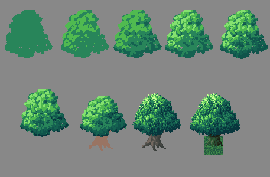
Je commence par dessiner grossièrement la forme du feuillage (étape 1), avant de consacrer 5 étapes à la création des volumes du feuillage. Ma source de lumière est à gauche et je place couleur après couleur des ombres et des lumières. L'étape 3 est celle où le procédé apparait le plus clairement. Cela fait, je dessine une esquisse de tronc et trouve que mon arbre à trop des airs de champignon géant. Je décide de descendre le feuillage un bon coup (et oui, un peu de travail effectué pour rien). Je détaille un peu le tronc et beaucoup le feuillage (c'est TRÈS TRÈS long et TRÈS TRÈS ennuyeux. Soyez patients et appliqués) pour arriver à l'avant dernière étape.
Enfin, je coupe franchement le tronc pour éviter le problème des « racines tentacules » et bien planter mon arbre dans le sol, j'ajuste la forme du feuillage pour que l'arbre soit moins difforme (mais sans être parfaitement symétrique pour autant), je change la palette du tronc en quelque chose de plus sombre et plus vert (pour mieux s'accorder au feuillage), et je n'oublie pas que le feuillage fait de l'ombre au tronc. J'ai collé un de mes tiles d'herbes en dessous pour tester l'homogénéité des couleurs, mais j'ai eu la flemme de faire l'ombre portée du feuillage sur l'herbe : regardez le screenshot de Rudora no Hihou, ils font ça bien mieux que moi de toute façon.
Une dernière remarque en passant, je me suis ici permis de m'occuper séparément du feuillage et du tronc car j'ai fait un feuillage très dense qui masque complètement les branches. La logique voudrait que l'on dessine d'abord toutes les branches d'un arbre (son « squelette 7) avant d'y ajouter les feuilles, et c'est ce qu'il faut faire si vos arbres sont plus dégarnis.
Vamos a la playa !
Passons sans plus attendre à des tiles plus ensoleillés, à commencer par un tile de sable. Conservons la même démarche que précédemment et observez de près les images ci-dessous :
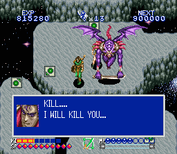
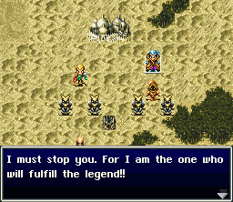
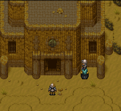
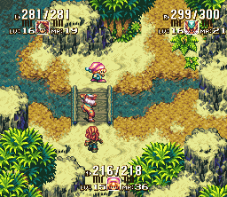
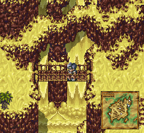
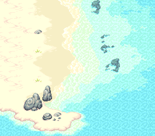
Si votre observation a été fructueuse, vous aurez remarqué que le tile de sable est bien plus simple à réaliser que les précédents, et aussi que la plupart des conseils données pour le tile d'herbe sont également valables ici (utiliser plusieurs tiles, faire attention à briser la grille, trouver un compromis entre volume et lisibilité). La plupart des tiles (les plus réussis surtout, notamment ceux de Seiken Densetsu 3 et de Sword of Mana) sont en majeure partie constitués d'un aplat d'une seule couleur (vacances pour le pixel artiste) accompagnée de petites dunes ondulées. Remarquez également que de petits motifs de dithering sont de bon ton pour les tiles de sable, afin de donner un texture granuleuse.
Question palette, il faut faire attention à éviter le jaune fluo crève-rétine, et ne pas hésiter à tirer vers des tons crèmes (Seiken Densetsu 3) ou marrons (Rudora No Hihou). Si vous faites tendre un peu la palette vers le rouge, vous obtiendrez un joli sable éclairé par le soleil couchant.
Étant donné que je n'ai cette fois-ci aucune technique particulière à illustrer et que tout ce que j'avais à signaler se voit dans les screenshots (et dans mon explication) ci-dessus, je passe mon tour et ne fais pas de tile de sable.
Sea, Sex And Sun !
Terminons notre petite liste par les tiles d'eau. Il existe plein de façons de traiter leur cas (bien plus que pour l'herbe) donc vous allez avoir du boulot si vous voulez tout analyser. En ce qui me concerne, je vais tenter de mettre en valeur les grandes lignes. Voilà pour les images :
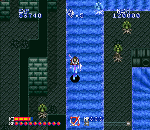
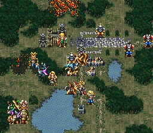
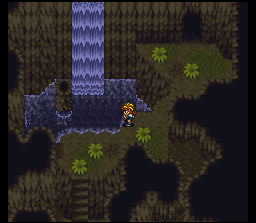
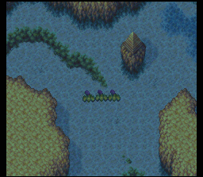
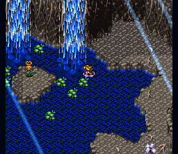
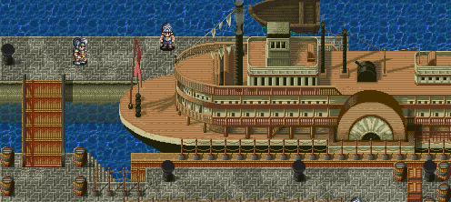
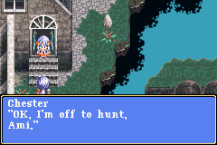

Je vous ai mis la dose mais il faut bien ça pour illustrer la diversité des méthodes utilisables. Procédons a une classification.
Les tiles de Sword of Mana et Tales of Phantasia sont les plus minimalistes du lot. Ils utilisent peu de couleurs par tiles et illustrent à merveille le premier point que je veux vous faire remarquer : l'eau étant une matière à peu près transparente, on la repère généralement plus à son entourage qu'à sa propre présence. Je m'explique : regardez cette photo du lac de Fabrège (dans les Pyrénées). La surface du lac est avant tout la surface où se reflète la montagne. Vous voyez une montagne à l'envers sur le sol, donc vous en concluez qu'il s'agit d'une étendue d'eau où la montagne se reflète, alors que rien ne vous l'indique vraiment.
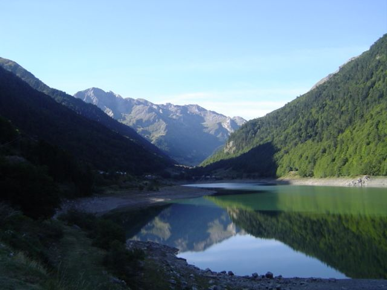
Bien qu'il soit difficile d'atteindre de tels extrêmes dans la réalisation d'un tile (encore que, ça mériterait d'être essayé), je pense que vous comprendrez l'idée en voyant que l'eau de Tales of Phantasia est d'un bleu uni sur lequel s'étalent les ombres des branchages qui la surplombent. De même, Sword of Mana dispose de toute une palette de profondeurs différentes, en jouant sur la palette utilisée. Plus l'eau est sombre et opaque, plus la distance qui sépare le fond de la surface est grande. Enfin, en regardant un peu les autres screenshots, vous remarquerez qu'il n'est pas rare de voir des falaises s'y refléter (ou visibles en transparence à travers l'eau), notamment dans Rudora No Hihou.
Les tiles de Chrono Trigger et Bahamut Lagoon sont les moins réussis du lot, et ne constituent pas des exemples à suivre (sauf pour ce qui est des cascades). Leurs textures sont avares en couleurs et se limitent à des barbouillages informes de points, à tel point que si l'eau de Bahamut Lagoon n'était pas bleue, il serait très difficile de deviner qu'il s'agit d'eau (une texture réussie est reconnaissable en noir et blanc).
A l'inverse, Alcahest, Terranigma et Rudora No Hihou (celui dans la caverne) ont des textures bien plus évocatrices, qui dessinent des motifs souples et arrondis (et bien anti-aliasés aussi). Regardez par exemple sur ce détail du screenshot de Rudora No Hihou comment la texture trace des courbes qui ondulent sur la surface de l'eau.
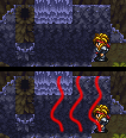
J'ai gardé le meilleur, et le plus difficile, pour la fin : l'eau de mer et les vagues. Il est courant de représenter les tiles de mer en utilisant une ou deux couleurs très claires pour tracer les crêtes des vagues, formant ainsi une sorte de trame ondulée et très irrégulière à la surface de l'eau. Il faut ensuite remplir cette trame en utilisant les couleurs plus sombres et sans oublier de choisir une source de lumière (les vagues sont tout sauf plates !). Ci-dessous, ma tentative personnelle après une séance d'observation.
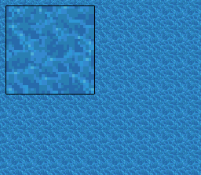
J'ai tenté de garder discret le système de crêtes mais je pense que le résultat final manque un peu de personnalité. L'excès inverse se trouve dans The Legend of Zelda : The Wind Waker dont la mer se limite en tout et pour tout à ce système de quadrillage (mais le résultat est pourtant excellent !).
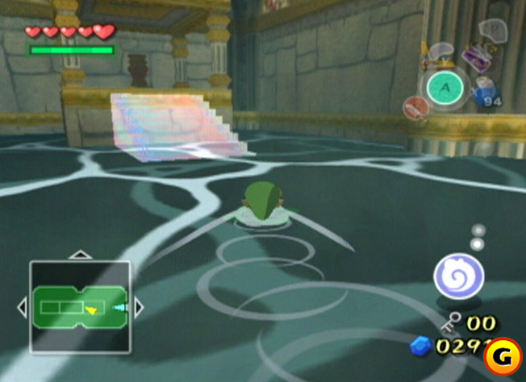
Le grand secret de la vie et de la mort
Nous en avons maintenant fini avec les tiles, et ce cours touche également à sa fin. J'ose espérer qu'il vous a été utile et que vos jeux seront désormais un peu plus beaux. Je tiens à conclure en vous donnant un dernier conseil, et c'est sans aucun doute le plus important que vous trouverez dans ces 8 chapitres : c'est en vous entraînant que vous progresserez. Le pixel art est un domaine dans lequel vous pouvez devenir très bon sans avoir aucune forme de talent et sans être un artiste très doué avec les médias plus traditionnels (dessin, peinture…). La persévérance couplée au travail acharné est un duo gagnant à tous les coups, pour peu que vous réfléchissiez un peu à ce que vous faites et que vous soyez appliqués. La paresse et l'attentisme sont eux un duo perdant à tous les coups. C'est seulement en enchaînant tileset sur tileset et personnage sur personnage que vous finirez par exceller en la matière. N'attendez pas de miracle du jour au lendemain, il s'agit d'une progression lente et organique que vous ne remarquerez qu'en comparant vos travaux récents à ceux réalisés plusieurs semaines ou plusieurs mois auparavant. Pour preuve, je vous laisse en compagnie d'une image qui illustre ma propre progression entre 2006 et 2008 et qui vous en donne la clé.
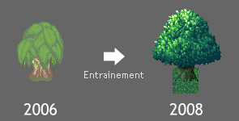
Ajouter un commentaire
Commentaires

DISCLAIMER : Talent is not inclued in this method.
Je comprends rien

Je n'ai pas de réponse définitive à vous fournir sur la question des méthodes employées précisément, d'autant plus qu'elles divergent selon les différents studios.
Pour exemple, je me souviens avoir vu des concept arts du premier The Legend of Zelda sur du papier avec une grille où le designer avec dessiné des versions simplifiées des monstres qui devaient servir de base au pixel art pour les sprites. Certains fonds de combat de Final Fantasy VI semblent avoir été inspirés par des réductions photographiques. Les sprites des jeux de combat 2D Capcom plus récents sont basés sur des dessins papier méticuleusement re-linés en pixel art. Pour des exemples de processus de travail d'artistes actuels, on peut jeter un oeil aux forums de Pixelation : certains commencent avec base papier, d'autres sans, mais dans tous les cas, un travail de véritable pixel art reste nécessaire à la fin.
Cependant, il serait naïf de croire que ces graphismes sont obtenus simplement en scannant des illustrations papiers. En scannant une illustration papier, on n'obtient ni des graphismes qui bouclent (alors que les tiles sont essentiels), ni une palette de couleur réduite, ni une bonne palette (les problèmes de colométrie sont encore très actuels), ni des traits propres, ni un bon contraste, ni une bonne lisibilité, ni un bon anti-aliasing. Par exemple, scanner une illustration papier ne sera que très peu utile (voire pas du tout) pour des graphismes de résolution Game Boy ou Nes, à peine plus pour des décors de SNES.
Au mieux, une illustration scannée et réduite peut constituer une base pour travailler (comme dans le cas des photographies de Final Fantasy VI), mais en général cela servira plutôt pour de très grandes portions de graphisme (des facesets, des fonds de combats, des écrans fixes dans une introduction, du très grand pixel art comme sur Playstation, etc.) et non pour des tiles. Par ailleurs, cela n'évitera en rien un très long et méticuleux travail de pixel art derrière. Par exemple, une réduction de couleurs automatiques donne en général de mauvais résultats sur tout ce qui est lignes.
Pour donner une illustration de ce que donne une simple réduction des couleurs à partir d'illustrations plus grandes, on peut regarder l'un des derniers trailers de Lightning Returns, qui a été réalisé dans un style pseudo-rétro : le résultat est extrêmemement pauvre et mauvais dans l'ensemble (à l'exception peut-être de la partie non-animée de Barthandelus que j'avais vu traîner sur Internet au moins deux ans auparavant) et donne une vision plutôt inquiétante de la perte de compétence en 2D chez Square-Enix. On peut aussi parler des effets de redimensionnement catastrophiques sur la version Iphone de Final Fantasy VI qui vient de sortir.
Pour résumer, même si le mode de travail fait intervenir une base papier, un rendu pixel art nécessite toujours un gros travail à l'ordinateur après coup (ce qui est le cas d'à peu près tous les bons exemples que vous pourrez voir dans cette série d'articles, je pense : regardez les lignes de pixel parfaitement verticales du bateau et du ponton de Star Ocean sur SNES, il est impossible d'obtenir un rendu parfait comme celui-ci en se contentant de scanner). On peut tout à fait travailler intelligemment avec les outils récents, mais on ne peut jamais vraiment éviter le travail de pixel art derrière :)
Je suis tombé sur cette page par hasard je pense simplement que ceux qui ont fait les graphismes pour les jeux mentionné ci-dessus ont tous simplement fait les dessins à la mains puis les on digitalisés scanés en fait pixélisé je ne les vois pas faire des jeux vidéo pixel par pixel à mon humble avis.
Attention ce n'est pas une critique mais plutôt une réflexion car je n'ai jamais rien trouvé sur la façon de faire les graphismes de jeux tel que chrono trigger, Rudra No Hihou, ou seiken dentsetsu 3 ; il devait déjà à l'époque avoir des sorte de scanner pour y intégré à l'ordinateur.
Voilà voilà une réponse pour éclairé ma lanterne sur la façon de faire les graphisme de l'époque serait la bien venu.
Salut.
http://opengameart.org/content/les-forges-pixel-art-course
"Translator's Notes
This massive pixel art tutorial is written by Fil Razorback from LesForges.org. You can find the original tutorials here. A big thank you to Fil Razorback for allowing OpenGameArt.org to translate these tutorials and archive them here!"
Pas de panique ;)
Désolé de up mais : http://opengameart.org/content/chapter-8-a-world-of-tiles
=> On vous a "plagié" (traduit et même pas de citation vers votre site !)

Merci pour ces différents cours sur le pixel art ! Je débute complètement mais j'ai appris plein de trucs. En plus les textes sont plutôt drôles à lire.
Merci !
Ma deuxième référence ! Pour ce qui veulent continuer dans le pixel art il y a aussi ce tuto (en anglais) qui est bien : http://gas13.ru/v3/tutorials/sywtbapa_almighty_grass_tile.php Il aborde plus les personnages et l'animation alors les deux se complètent.
En tout cas merci beaucoup pour ce tuto de qualité.
Très bon article, très complet. Ma référence.
Peut-être serait-il intéressant de dédier un article complet à l'eau, parce que l'eau est vraiment le cauchemar du graphiste, et pas seulement pour le tile de mer. D'ailleurs ici un seul type d'eau est traité : le type "quadrillage", utilisé dans ZeldaWindWaker ou encore dans les RTP de RPG Maker XP. Mais il y a également le type motif de vagues, utilisé dans pokémon Rubis/Saphir (http://media.strategywiki.org/images/a/af/PRS%26E_Abandonedship.png) ; ou encore le type bleu uni, avec des scintillements et/ou des petites vaguelettes, comme dans Zelda MinishCap (http://static2.dmcdn.net/static/video/226/411/20114622:jpeg_preview_large.jpg). Animer une fontaine ou dessiner de la pluie n'est pas évident au premier abord. Mettez donc un de vos pixel-artistes sur l'écriture d'un article à propos.
Dommage que le cours ne se poursuive pas avec les personnages et les animations. Y a-t-il un autre tuto aussi bien fait sur le sujet ?
--Doudoulolita
Hey, just noticed it's fil_razorback from Pixelation! Cheers and thanks again !
--leSingeFaitIl
(Je suis désolé — Je ne parle pas français. Cela a été traduit par google)
Je suis arrivé ici, de http://opengameart.org/.
Vous avez un très joli site web. Vos tutoriels sont très bien! Merci!
--leSingeFaitIl